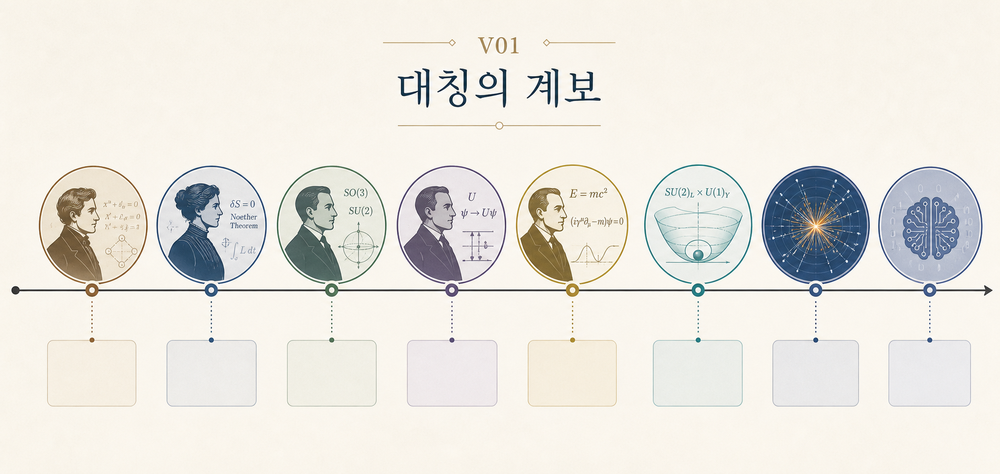

서문: 대칭의 대성당 — 우주는 무엇에 매료되어 있는가?
우리는 왜 아름다움에 반응하는가? 왜 밤하늘의 반복되는 패턴에서 질서를 읽고, 수학적으로 정교한 음악에서 균형감을 느끼는가? 물리학자에게 이 질문은 단순한 감상의 문제가 아니다. 그것은 자연이 어떤 언어로 스스로를 조직하는가를 묻는 질문이다. 그 언어 가운데 가장 강력한 것이 바로 대칭성(symmetry)이다.
대칭은 흔히 "좌우가 같다"거나 "모양이 예쁘다"는 말로 가볍게 소비되지만, 물리학에서 그것은 훨씬 더 깊은 뜻을 가진다. 대칭이란 어떤 변환을 가해도 법칙의 형태가 바뀌지 않는다는 뜻이다. 그리고 바로 그 사실 때문에 대칭은 보존 법칙을 낳고, 상태를 분류하고, 허용되는 상호작용을 제한하며, 심지어 아직 보지 못한 존재를 예고하기도 한다. 물리학이 복잡한 현상을 끝없이 나열하지 않고도 짧은 수식과 적은 원리로 세계를 압축할 수 있었던 이유 중 하나가 여기에 있다.

20세기 물리학의 중요한 장면들을 떠올려 보자. 에미 뇌터는 대칭성과 보존 법칙의 연결을 정식화했고, 갈루아의 유산인 군론은 위그너의 손에서 양자 상태를 분류하는 도구가 되었다. 디랙은 상대론과 양자역학의 대칭을 끝까지 밀어붙인 끝에 반입자의 가능성을 보았고, 게이지 대칭은 결국 표준 모형의 설계도가 되었다. 오늘날에는 이 구조적 사고가 인공지능 연구 속에서도 새로운 형태로 되살아나고 있다.
이 책이 묻는 질문은 단순하다. 왜 대칭이 물리학의 공통 언어가 되었는가? 그러나 답은 결코 단순하지 않다. 대칭은 기하학의 미학이자, 방정식의 제약이자, 입자 분류의 문법이자, 현대 이론물리학의 설계 원리다. U(1), SU(2), SO(3,1) 같은 기호들이 처음에는 낯설고 차갑게 보일지라도, 이 책의 여정을 따라가다 보면 그것들이 결국 "무엇을 바꾸어도 변하지 않는가"를 적어 놓은 이름표라는 사실이 보일 것이다.
이 책은 완전히 초보적인 대중 과학서는 아니다. 우리는 필요할 때 수식을 피하지 않을 것이고, 물리학과 수학의 연결이 실제로 어떻게 작동하는지 보여 주려 할 것이다. 그렇다고 전공 교과서처럼 증명을 끝까지 밀어붙이는 책도 아니다. 정확히 말하면 이 책은 대중 교양서와 전공 입문서 사이에 서 있다. 수학적 정의를 전부 엄밀하게 전개하기보다, 왜 그 정의가 필요한지와 그것이 물리학에서 어떤 역할을 하는지를 먼저 붙잡으려 한다. 대학 초중반 수준의 물리학이나 수학을 이미 공부한 독자에게는 좋은 재구성의 기회가 될 것이고, 그렇지 않은 독자에게도 약간의 집중만 허락된다면 충분히 따라올 수 있도록 쓰고자 했다.
이 말은 곧 책의 읽는 법과도 연결된다. 모든 수식을 완벽히 계산하려고 애쓰기보다, 각 장에서 무엇이 대칭으로 남고 무엇이 그 대칭에서 따라 나오는지 붙잡는 편이 더 중요하다. 어떤 독자는 역사와 인물의 이야기에서 입구를 찾을 것이고, 어떤 독자는 수식과 구조에서 더 큰 즐거움을 느낄 것이다. 이 책은 두 독자를 모두 염두에 둔다. 대칭은 원래 미학과 계산, 직관과 형식이 만나는 자리이기 때문이다.
이제 각 장이 답하려는 질문을 짧게 미리 적어 보자.
- 제1장 뇌터는 "보존 법칙은 왜 존재하는가?"를 묻는다.
- 제2장 갈루아와 군론은 "대칭 자체는 어떤 문법으로 조직되는가?"를 묻는다.
- 제3장 위그너는 "그 문법이 양자 상태와 스펙트럼을 어떻게 분류하는가?"를 보여 준다.
- 제4장 로런츠는 "대칭의 무대가 원자 내부를 넘어 시공간 자체로 확장되면 무엇이 달라지는가?"를 다룬다.
- 제5장 게이지 대칭과 표준 모형은 "보이지 않는 내부 대칭이 어떻게 힘과 입자의 설계도가 되는가?"를 설명한다.
- 제6장 AI와 대칭은 "이 구조적 사고가 오늘날 지능과 학습의 문제에서 어떻게 다시 등장하는가?"를 묻는다.
이 로드맵을 한 문장으로 줄이면 이렇다. 우리는 먼저 보존의 이유를 보고, 그다음 대칭의 문법을 배우고, 이어서 그 문법이 원자와 시공간과 입자이론을 어떻게 조직하는지 따라간 뒤, 마지막에 그 언어가 다시 현대 AI로 흘러드는 장면을 보게 될 것이다. 즉, 이 책은 수학의 역사나 물리학의 역사만을 따로 다루는 책이 아니라, 대칭이라는 하나의 사상이 여러 시대와 여러 층위에서 어떻게 재등장하는가를 추적하는 책이다.
이 책의 목표는 독자에게 "대칭은 예쁜 장식이 아니라, 자연이 스스로를 기술하는 가장 경제적인 문장"이라는 감각을 남기는 것이다. 세계는 혼란스럽고 현상은 무수하지만, 좋은 이론은 그 혼란 속에서 변하지 않는 구조를 먼저 본다. 대칭은 바로 그 구조를 보는 가장 오래되고도 강력한 방법 가운데 하나다.
이제 그 대성당의 문을 열어 보자.